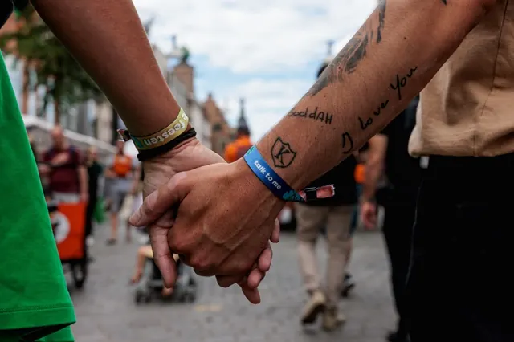

Nieuws ·
Vierdaagsefeesten-bezoekers ontmoeten elkaar via nieuw platform

Een nieuwe liefde of vriendengroep ontmoet, maar geen contactgegevens uitgewisseld? Vierdaagsefeesten heeft samen met Matchmaker Brabant de oplossing voor het in contact blijven en (her)ontmoeten van nieuwe vrienden op festivals: het ‘Talk to me’ – platform. Bezoekers kunnen zich voor, tijdens en na de feesten inschrijven op het platform en daar een oproep doen om samen een evenement op de feesten te bezoeken en nieuw gemaakte kennissen, vrienden of geliefden (terug) te vinden.
Talk to me platform
‘Talk to me’ is een campagne die Stichting Vierdaagsefeesten in 2022 startte, tegelijk met de komst Festival- en Vriendenbandjes. Voor €12 kunnen bezoekers sinds die editie een Festival- of Vriendenbandje kopen, waarmee ze onder andere de hele week onbeperkt toegang tot de toiletten hebben op de feesten. Aan de binnenkant van die bandjes staat de tekst ‘talk to me’, een woordspeling die indiceert dat men openstaat voor contact, gesprekken met onbekenden aan te gaan en misschien wel nieuwe vrienden te maken of een liefde te starten. Tijdens en na afloop van de Vierdaagsefeesten 2023 kwamen talloze oproepen binnen van festivalbezoekers die op zoek waren naar een geliefde, vriend of vriendin die ze tijdens de feesten hadden ontmoet, maar waarvan ze geen contactgegevens meer hadden. Deze oproepen werden verzameld en gedeeld in de hoop mensen te kunnen herenigen.
Samenwerking met Matchmaker Brabant
In de aankomende editie zet de campagne zich dus weer voort, maar dit keer wordt het breder aangepakt. De campagne werd vorig jaar opgenomen in de media en gedeeld bij onder andere programma’s van RTL, Radio 538, Radio 3FM en diverse regionale media. Hierdoor en door het delen van de oproepen in 2023, kwam de stichting in contact met Matchmaker Brabant, een datingbureau in Breda dat onder andere platforms beheert om mensen elkaar te laten ontmoeten en singles te matchen. In samenwerking met Stichting Vierdaagsefeesten heeft Matchmaker Brabant nu een dergelijk online platform uitgerold, dat de oplossing rondom het vraagstuk om nieuw ontmoete mensen tijdens de feesten terug te vinden óf met onbekenden naar de Vierdaagsefeesten te gaan.
Het platform en praktische informatie
Door je als bezoeker aan te melden op het platform van Matchmaker Brabant vind je mede-festivalgangers. Zowel het ontmoeten van nieuwe mensen voorafgaand van de feesten, zodat je daar mee op pad kan gaan, een oproep doen om samen met een (onbekende) groep mensen een optreden te bezoeken of elkaar terugvinden na een fysieke ontmoeting is nu mogelijk via het platform. Ilse Jespers, oprichter van Matchmaker Brabant is positief over de nieuwe samenwerking: ‘’Door deze campagne en het feit dat deze zo breed werd opgenomen in de media, zijn wij vorig jaar met elkaar ‘gematcht’. Hierdoor hebben we de samenwerking in gang kunnen zetten en is er uiteindelijk deze vervolgstap in de campagne uitgerold, waardoor we mensen echt kunnen verbinden en het ‘nieuwe mensen ontmoeten tijdens festivals’ een nieuw leven in kunnen blazen.’’ Het Talk to me platform is vanaf nu actief en te vinden via de Vierdaagesfeesten-app en via vierdaagsefeesten.nl/talktome. Iedereen kan zich er gratis op inschrijven en berichten in delen. Het platform voldoet aan de verplichte privacywetgeving en wordt gemonitord door de beheerders.
Tijdens de Vierdaagsefeesten
Met Talk to me wordt contact tussen festivalbezoekers van de Vierdaagsefeesten gestimuleerd. Het is vrijblijvend om je als bezoeker in te schrijven en mee te doen. Wil je als bezoeker uitdragen dat je eraan meedoet, dan is het bandje met de tekst ‘talk to me’ te bestellen via de webshop van Vierdaagsefeesten, dit is natuurlijk niet verplicht. Voor meer informatie over Matchmaker Brabant en het Talk to me platform, kunnen bezoekers tijdens de Vierdaagsefeesten tussen 15.00 en 20.00 uur terecht bij een kraampje van Matchmaker Brabant, naast de Vierdaagsefeesten merchandisestand in de Burchtstraat.